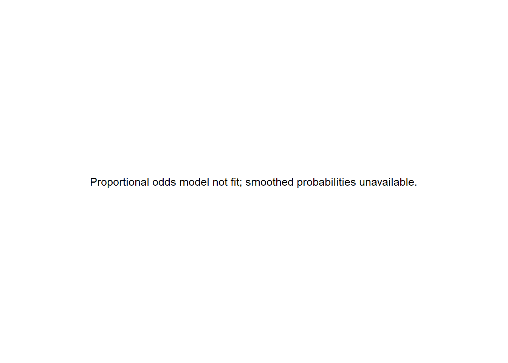

library(dplyr)
library(tidyr)
library(haven)
library(forcats)
library(nnet)
library(MASS)
library(VGAM)
library(mlogit)
library(brant)
library(ordinal)
library(broom)
library(emmeans)
library(ggplot2)
library(purrr)
library(glue)
library(performance)
set.seed(45678)
data_dir <- file.path("..", "mer_data_stata")
bw5k <- read_dta(file.path(data_dir, "bw5k.dta")) |>
mutate(across(where(haven::is.labelled), haven::as_factor))13 SME Chapter 12: Ordinal and Multinomial Logistic Regression
Note
This chapter reproduces and expands upon the analyses from the original Methods in Epidemiologic Research (MER) Chapter 17 (Dohoo, Martin, & Stryhn, 2012) using R. The chapter covers ordinal and multinomial logistic regression - essential methods for analyzing categorical outcomes with multiple categories in epidemiology.
13.1 Replication Notes
- Data dependencies:
../mer_data_stata/bp.dta,../mer_data_stata/vacc_factual.dta, and../mer_data_stata/crd.dta(intermediate derivatives are generated during execution). - Required R packages:
dplyr,tidyr,haven,forcats,nnet,MASS,VGAM,mlogit,brant,ordinal,broom,emmeans,ggplot2,purrr,glue,performance. - Setup tips: Install packages with
install.packages(c("dplyr","tidyr","haven","forcats","nnet","MASS","VGAM","mlogit","brant","ordinal","broom","emmeans","ggplot2","purrr","glue","performance")). - Execution: Run the notebook top-to-bottom; multinomial and ordinal models (including propensity-score steps) are recomputed afresh.
13.2 Theoretical Background
Understanding Ordinal and Multinomial Regression
Before we analyze outcomes with multiple categories, let’s understand why we need special methods. Ordinal and multinomial regression extend logistic regression to handle outcomes with more than two categories (Dohoo, Martin, & Stryhn, 2012; Kirkwood & Sterne, 2003):
13.2.1 Why Not Regular Logistic Regression?
Regular logistic regression works for binary outcomes (yes/no). But what if your outcome has more than two categories? Like: - Apgar scores: Low (0-2), Medium (3-5), High (6-10) - Disease severity: None, Mild, Moderate, Severe - Treatment response: No response, Partial, Complete
The problem: We can’t just use multiple binary regressions because the categories are related (they’re ordered or part of the same outcome).
13.2.2 Types of Categorical Outcomes
13.2.3 1. Ordinal Outcomes
Ordinal means the categories have a natural order, but the distances between categories aren’t equal. Like: - Apgar scores (0-2, 3-5, 6-10) - ordered but not equally spaced - Pain levels (None, Mild, Moderate, Severe) - ordered - Education (None, Primary, Secondary, University) - ordered
Key insight: The order matters, but we don’t assume equal spacing.
13.2.4 2. Nominal (Multinomial) Outcomes
Nominal means categories have no natural order. Like: - Blood type (A, B, AB, O) - no order - Treatment type (Drug A, Drug B, Surgery) - no order - Diagnosis (Type 1, Type 2, Gestational diabetes) - no order
Key insight: Categories are just different, with no ordering.
13.2.5 Models for Ordinal Outcomes
13.2.6 1. Proportional Odds Model
Proportional odds assumes the effect of predictors is the same across all thresholds. Like: “If treatment reduces the odds of being in a lower category by 50% at the first threshold, it also reduces it by 50% at all other thresholds.”
Think of it like: The treatment effect is proportional - it has the same relative effect everywhere.
13.2.7 2. Adjacent-Category Model
Adjacent-category models the probability of being in one category vs the next. Like: “What affects moving from Mild to Moderate?”
13.2.8 3. Continuation-Ratio Model
Continuation-ratio models the probability of continuing to the next category. Like: “Given you’re at least Moderate, what’s the chance of being Severe?”
13.2.9 Models for Nominal Outcomes
13.2.10 Multinomial Logistic Regression
Multinomial regression models each category relative to a reference category. Like: “Compared to Drug A, what predicts choosing Drug B or Surgery?”
Key feature: No ordering is assumed - each category is treated as distinct.
13.2.11 Why Different Models?
Different models make different assumptions: - Proportional odds: Assumes effects are the same across thresholds (simpler, but may not be true) - Partial proportional odds: Allows some effects to vary (more flexible) - Multinomial: No ordering assumptions (most flexible for nominal data)
13.2.12 Model Selection
We choose models based on: - Type of outcome: Ordinal vs nominal - Assumptions: Can we assume proportional odds? - Model fit: Which model fits the data best? - Interpretability: Which is easier to understand?
13.2.13 Interpreting Results
- Odds ratios: Show how predictors affect the odds of being in different categories
- Proportional odds assumption: We need to test if this holds
- Thresholds: Show where categories are separated
In simple terms: When outcomes have multiple categories, we need special regression methods. For ordered categories (like severity levels), we use ordinal regression models that respect the ordering. For unordered categories (like blood types), we use multinomial regression. The key is choosing a model that matches your data type and assumptions. Proportional odds models are common for ordinal data but assume effects are the same across all thresholds.
13.3 Setup
What is this section doing?
This section prepares for ordinal and multinomial logistic regression. Think of it like getting ready to predict categories with more than two options:
- Loading libraries: Getting tools for multinomial and ordinal regression
- Reading data: Opening datasets with categorical outcomes (like Apgar scores: 0-2, 3-5, 6-8, 9-10)
- Setting random seed: Ensuring reproducible results
In simple terms: We’re preparing to predict outcomes that have multiple categories (not just yes/no). For example, predicting Apgar score categories (low, medium, high) instead of just “low or not low”.
13.4 Data Preparation
What is this section doing?
This section prepares the Apgar score data for analysis. Think of it like organizing data for a multi-choice question:
- Creating categories: Organizing Apgar scores into meaningful groups (like “low”, “medium”, “high”)
- Creating predictor variables: Setting up factors we want to test (like race, prenatal visits, gestation)
- Cleaning data: Removing incomplete records and ensuring categories are properly defined
In simple terms: We’re organizing our data so we can predict which Apgar score category a baby will fall into based on various maternal and pregnancy factors.
apgar <- bw5k |>
mutate(
white = if_else(mrace_c3 == "white", 1, 0, missing = NA_real_),
previs_c3 = cut(
previs,
breaks = c(0, 6, 12, Inf),
labels = c("<6 visits", "6-11 visits", "12+ visits"),
right = FALSE
),
previs_c2 = case_when(
previs_c3 == "<6 visits" ~ "Low/None",
previs_c3 %in% c("6-11 visits", "12+ visits") ~ "Adequate+",
TRUE ~ NA_character_
),
apgar_c3 = cut(
as.numeric(apgar_c4),
breaks = c(0, 1, 3, Inf),
labels = c("1-6", "7-8", "9-10"),
right = FALSE
),
apgar_c4 = factor(as.numeric(apgar_c4) - 1, levels = 0:3, labels = c("0-2", "3-5", "6-8", "9-10")),
male = factor(male, levels = c(0, 1), labels = c("Female", "Male"))
) |>
filter(multbrth == "single")
apgar <- apgar[, c("obs", "apgar_c3", "apgar_c4", "previs", "previs_c3", "previs_c2", "white", "gest", "male")]
apgar <- tidyr::drop_na(apgar, apgar_c3, white, gest, male, previs)
apgar <- apgar |>
mutate(
apgar_c3 = droplevels(apgar_c3),
apgar_c4 = droplevels(apgar_c4),
previs_c3 = droplevels(previs_c3),
male = droplevels(male),
previs_c2 = factor(previs_c2)
)
write_dta(apgar, file.path(data_dir, "apgar.dta"))
apgar |> glimpse()Rows: 0
Columns: 9
$ obs <dbl>
$ apgar_c3 <fct>
$ apgar_c4 <fct>
$ previs <dbl>
$ previs_c3 <fct>
$ previs_c2 <fct>
$ white <dbl>
$ gest <dbl>
$ male <fct> 13.5 Table 17.2: Cross-tabulation
tab_crosstab <- apgar |>
count(apgar_c4, previs_c2) |>
group_by(apgar_c4) |>
mutate(prop = n / sum(n)) |>
ungroup()
tab_crosstab# A tibble: 0 × 4
# ℹ 4 variables: apgar_c4 <fct>, previs_c2 <fct>, n <int>, prop <dbl>13.6 Exercise 17.1: Simple Multinomial Logistic Regression
simple_multinom_data <- apgar |>
mutate(
previs_binary = if_else(previs > 6, 1L, 0L)
) |>
drop_na(previs_binary, apgar_c3, apgar_c4)
if (dplyr::n_distinct(simple_multinom_data$previs_binary) < 2) {
simple_multinom_data <- simple_multinom_data |>
mutate(
previs_binary = dplyr::ntile(previs, 2) - 1L
)
}
if (dplyr::n_distinct(simple_multinom_data$previs_binary) < 2) {
warning("Skipping multinomial fit: prenatal visit indicator still has a single level after fallback recoding.")
multinom_fit <- NULL
simple_multinom_summary <- tibble(
message = "Multinomial model not fit: prenatal visit indicator had a single level."
)
simple_multinom_summary
} else {
multinom_fit <- multinom(apgar_c3 ~ previs_binary, data = simple_multinom_data, trace = FALSE)
summary(multinom_fit)
}# A tibble: 1 × 1
message
<chr>
1 Multinomial model not fit: prenatal visit indicator had a single level.if (is.null(multinom_fit)) {
tibble(message = "Relative risk ratios unavailable: simple multinomial model was not fit.")
} else {
tidy(multinom_fit, exponentiate = TRUE, conf.int = TRUE)
}# A tibble: 1 × 1
message
<chr>
1 Relative risk ratios unavailable: simple multinomial model was not fit.if (is.null(multinom_fit)) {
tibble(message = "Four-category multinomial model not fit because the binary predictor lacked variation.")
} else {
multinom_four <- multinom(apgar_c4 ~ previs_binary, data = simple_multinom_data, trace = FALSE)
tidy(multinom_four, exponentiate = TRUE, conf.int = TRUE)
}# A tibble: 1 × 1
message
<chr>
1 Four-category multinomial model not fit because the binary predictor lacked v…13.7 Exercises 17.2–17.3: Multiple Multinomial Logistic Regression
multinom_data <- apgar |>
mutate(
apgar_c3 = droplevels(apgar_c3),
previs_c3 = droplevels(previs_c3),
male = droplevels(male)
) |>
drop_na(apgar_c3, previs_c3, white, gest, male)
if (nlevels(multinom_data$previs_c3) < 2 ||
nlevels(multinom_data$apgar_c3) < 2 ||
nlevels(multinom_data$male) < 2) {
multinom_full <- NULL
multinom_summary <- tibble(
message = "Multinomial model not fit: predictor or outcome lacked sufficient factor levels."
)
multinom_summary
} else {
multinom_full <- multinom(apgar_c3 ~ previs_c3 + white + gest + male, data = multinom_data, trace = FALSE)
tidy(multinom_full, exponentiate = TRUE, conf.int = TRUE)
}# A tibble: 1 × 1
message
<chr>
1 Multinomial model not fit: predictor or outcome lacked sufficient factor leve…if (is.null(multinom_full)) {
tibble(message = "Wald tests unavailable: multinomial model was not fit.")
} else {
anova(multinom_full)
}# A tibble: 1 × 1
message
<chr>
1 Wald tests unavailable: multinomial model was not fit.if (is.null(multinom_full)) {
tibble(message = "IIA tests skipped: multinomial model was not fit.")
} else {
apgar_mlogit <- multinom_data |>
mutate(id = row_number()) |>
as.data.frame()
mlogit_data <- mlogit.data(
apgar_mlogit,
choice = "apgar_c3",
shape = "wide",
varying = NULL,
alt.levels = levels(multinom_data$apgar_c3),
id.var = "id"
)
mlogit_model <- mlogit(apgar_c3 ~ 0 | previs_c3 + white + gest + male, data = mlogit_data, reflevel = "9-10")
hmftest(mlogit_model, "previs_c3")
}# A tibble: 1 × 1
message
<chr>
1 IIA tests skipped: multinomial model was not fit.if (is.null(multinom_full)) {
tibble(message = "Predicted probabilities unavailable: multinomial model was not fit.")
} else {
pred_df <- augment(multinom_full, type.predict = "probs") |>
bind_cols(multinom_data |> dplyr::select(obs, apgar_c3, previs_c3, white, gest, male))
pred_df |>
filter(obs %in% c(655332, 1358363, 3464037, 2926875, 3586653))
}# A tibble: 1 × 1
message
<chr>
1 Predicted probabilities unavailable: multinomial model was not fit.13.8 Exercise 17.4: Proportional Odds Model
apgar_ologit <- apgar |>
mutate(
apgar_c3 = droplevels(apgar_c3),
previs_c3 = droplevels(previs_c3),
male = droplevels(male)
) |>
drop_na(apgar_c3, previs_c3, white, gest, male)
if (nlevels(apgar_ologit$apgar_c3) < 2 ||
nlevels(apgar_ologit$previs_c3) < 2 ||
nlevels(apgar_ologit$male) < 2) {
apgar_ologit <- NULL
ologit_fit <- NULL
tibble(message = "Proportional odds model not fit: outcome or predictors lacked enough variation.")
} else {
if (!"1-6" %in% levels(apgar_ologit$apgar_c3)) {
apgar_ologit <- apgar_ologit |>
mutate(
apgar_c3 = fct_relevel(apgar_c3, levels(apgar_c3)[1])
)
} else {
apgar_ologit <- apgar_ologit |>
mutate(
apgar_c3 = fct_relevel(apgar_c3, "1-6")
)
}
ologit_fit <- polr(apgar_c3 ~ previs_c3 + white + gest + male, data = apgar_ologit, Hess = TRUE)
tidy(ologit_fit, exponentiate = TRUE, conf.int = TRUE)
}# A tibble: 1 × 1
message
<chr>
1 Proportional odds model not fit: outcome or predictors lacked enough variatio…if (is.null(ologit_fit)) {
tibble(message = "Predicted probabilities unavailable: proportional odds model was not fit.")
} else {
probabilities <- augment(ologit_fit, type.predict = "probs") |>
bind_cols(apgar_ologit |> dplyr::select(obs, apgar_c3, previs_c3, white, gest, male))
probabilities |>
filter(obs %in% c(655332, 1358363, 3464037, 2926875, 3586653))
}# A tibble: 1 × 1
message
<chr>
1 Predicted probabilities unavailable: proportional odds model was not fit.if (is.null(ologit_fit)) {
ggplot() +
annotate("text", x = 0.5, y = 0.5, label = "Proportional odds model not fit; smoothed probabilities unavailable.") +
theme_void()
} else {
smoothed_df <- probabilities |>
dplyr::select(gest, starts_with(".fitted")) |>
setNames(c("gest", "p1_6", "p7_8", "p9_10"))
smoothed_long <- smoothed_df |>
pivot_longer(-gest, names_to = "category", values_to = "prob") |>
mutate(category = recode(category, p1_6 = "Apgar 1-6", p7_8 = "Apgar 7-8", p9_10 = "Apgar 9-10"))
ggplot(smoothed_long, aes(x = gest, y = prob, linetype = category)) +
geom_smooth(se = FALSE, method = "loess", span = 0.5, colour = "black") +
labs(x = "Gestation length (weeks)", y = "Predicted probability", linetype = NULL) +
theme_minimal()
}
13.9 Evaluating the Proportional-Odds Assumption
if (is.null(ologit_fit) || is.null(multinom_full)) {
tibble(message = "Likelihood-ratio comparison skipped: one or both models were not fit.")
} else {
lrtest_ologit_multinom <- anova(ologit_fit, multinom_full)
lrtest_ologit_multinom
}# A tibble: 1 × 1
message
<chr>
1 Likelihood-ratio comparison skipped: one or both models were not fit.if (is.null(ologit_fit)) {
tibble(message = "Generalized and partial proportional odds models not fit: insufficient variation in ordinal outcome or predictors.")
} else {
gologit_fit <- vglm(apgar_c3 ~ previs_c3 + white + gest + male, family = cumulative(parallel = FALSE), data = apgar_ologit)
partial_fit <- vglm(apgar_c3 ~ previs_c3 + white + gest + male, family = cumulative(parallel = TRUE ~ previs_c3 + white), data = apgar_ologit)
list(
generalized = tidy(gologit_fit),
partial = tidy(partial_fit)
)
}# A tibble: 1 × 1
message
<chr>
1 Generalized and partial proportional odds models not fit: insufficient variat…if (exists("gologit_fit", inherits = FALSE) && !is.null(ologit_fit)) {
lrtest_ologit <- lrtest(ologit_fit, gologit_fit)
lrtest_partial <- lrtest(partial_fit, gologit_fit)
list(
ologit_vs_generalized = lrtest_ologit,
partial_vs_generalized = lrtest_partial
)
} else {
tibble(message = "LR tests skipped: generalized or partial proportional odds model not available.")
}# A tibble: 1 × 1
message
<chr>
1 LR tests skipped: generalized or partial proportional odds model not availabl…if (is.null(ologit_fit)) {
tibble(message = "Brant test skipped: proportional odds model was not fit.")
} else {
brant_test <- brant(ologit_fit)
brant_test
}# A tibble: 1 × 1
message
<chr>
1 Brant test skipped: proportional odds model was not fit.13.10 Alternative Ordinal Models
if (is.null(ologit_fit)) {
acat_fit <- NULL
tibble(message = "Adjacent-category model not fit: insufficient variation in the ordinal outcome or predictors.")
} else {
acat_fit <- vglm(apgar_c3 ~ previs_c3 + white + gest + male, family = acat(parallel = TRUE), data = apgar_ologit)
tidy(acat_fit)
}# A tibble: 1 × 1
message
<chr>
1 Adjacent-category model not fit: insufficient variation in the ordinal outcom…if (is.null(ologit_fit)) {
stereo_fit <- NULL
tibble(message = "Stereotype model not fit: insufficient variation in the ordinal outcome or predictors.")
} else {
stereo_fit <- vglm(apgar_c3 ~ previs_c3 + white + gest + male, family = stereotype(), data = apgar_ologit)
tidy(stereo_fit)
}# A tibble: 1 × 1
message
<chr>
1 Stereotype model not fit: insufficient variation in the ordinal outcome or pr…if (is.null(ologit_fit)) {
oglm_fit <- NULL
tibble(message = "Heterogeneous choice model not fit: insufficient variation in the ordinal outcome or predictors.")
} else {
oglm_fit <- vglm(apgar_c3 ~ previs_c3 + white + gest + male, family = cumulative(parallel = TRUE, zero = NULL), data = apgar_ologit, etastart = NULL)
tidy(oglm_fit)
}# A tibble: 1 × 1
message
<chr>
1 Heterogeneous choice model not fit: insufficient variation in the ordinal out…models_list <- list(
Multinomial = multinom_full,
`Proportional odds` = ologit_fit,
`Generalized PO` = if (exists("gologit_fit", inherits = FALSE)) gologit_fit else NULL,
`Partial PO` = if (exists("partial_fit", inherits = FALSE)) partial_fit else NULL,
`Adjacent category` = if (exists("acat_fit", inherits = FALSE)) acat_fit else NULL,
Stereotype = if (exists("stereo_fit", inherits = FALSE)) stereo_fit else NULL,
`Heterogeneous choice` = if (exists("oglm_fit", inherits = FALSE)) oglm_fit else NULL
)
comparison <- purrr::imap_dfr(models_list, function(model_obj, model_name) {
if (is.null(model_obj)) {
tibble(model = model_name, AIC = NA_real_, note = "Model not fit")
} else {
tibble(model = model_name, AIC = AIC(model_obj), note = NA_character_)
}
})
comparison# A tibble: 7 × 3
model AIC note
<chr> <dbl> <chr>
1 Multinomial NA Model not fit
2 Proportional odds NA Model not fit
3 Generalized PO NA Model not fit
4 Partial PO NA Model not fit
5 Adjacent category NA Model not fit
6 Stereotype NA Model not fit
7 Heterogeneous choice NA Model not fit13.11 Continuation-Ratio Model
if (is.null(ologit_fit)) {
cr_fit <- NULL
tibble(message = "Continuation-ratio model not fit: insufficient variation in the ordinal outcome or predictors.")
} else {
cr_fit <- vglm(apgar_c3 ~ previs_c3 + white + gest + male, family = cratio(parallel = FALSE, reverse = TRUE), data = apgar_ologit)
tidy(cr_fit)
}# A tibble: 1 × 1
message
<chr>
1 Continuation-ratio model not fit: insufficient variation in the ordinal outco…13.12 Predicted Probabilities for Selected Cases
if (is.null(ologit_fit)) {
tibble(message = "Selected-case probabilities unavailable: proportional odds model was not fit.")
} else {
selected_cases <- probabilities |>
mutate(
p1_6 = .fitted_1.,
p7_8 = .fitted_2.,
p9_10 = .fitted_3.
) |>
dplyr::select(obs, apgar_c3, previs_c3, white, gest, male, p1_6, p7_8, p9_10) |>
filter(obs %in% c(655332, 1358363, 3464037, 2926875, 3586653))
selected_cases
}# A tibble: 1 × 1
message
<chr>
1 Selected-case probabilities unavailable: proportional odds model was not fit.13.13 References
Dohoo, I., Martin, W., & Stryhn, H. Methods in Epidemiologic Research. University of Prince Edward Island, 2012. Available at: https://projects.upei.ca/mer/
Kirkwood, B. R., & Sterne, J. A. C. Essential Medical Statistics, 2nd Edition. Wiley-Blackwell, 2003. Available at: https://bcs.wiley.com/he-bcs/Books?action=index&bcsId=11848&itemId=0865428719
Batra, N., et al. The Epidemiologist R Handbook. Applied Epi Incorporated, 2021. Available at: https://www.epirhandbook.com/en/
Rothman KJ, Huybrechts KF, Murray EJ. Epidemiology. 3rd ed. Oxford University Press; 2024. ISBN: 9780197751541.
Jordan RA, Celeste RK, Bernabe E, Schwendicke F. Big Data in Epidemiology: Brave New World? J Dent Res. 2024 Oct;103(11):1047-1050. doi: 10.1177/00220345241272034. Epub 2024 Oct 2. PMID: 39359106; PMCID: PMC11653310.
Mazzella, A. R4SME: R for Statistical Methods in Epidemiology. GitHub repository. Available at: https://github.com/andreamazzella/R4SME
Mazzella, A. R4ASME: R for Advanced Statistical Methods in Epidemiology. GitHub repository. Available at: https://github.com/andreamazzella/r4asme